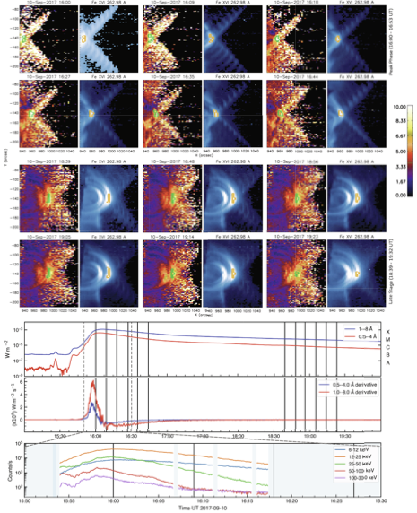
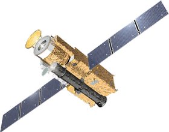

Composition
Coronal EUV plasma composition and first ionisation potential bias in active regions and flares.
Overview
I work on solar physics using spectroscopy at ESTEC in Noordwijk, Netherlands.

Featured solar figure
This figure from To et al. (2024) follows plasma composition through the 2017 September 10 X8.2 flare, showing how footpoints and loop-top regions evolve differently during the event.
My current work focuses on two related threads:
Composition
Coronal EUV plasma composition and first ionisation potential bias in active regions and flares.
Flares
Spectroscopic signatures of flare onset and flare evolution.
Background
Before joining ESA in 2023, I completed a PhD in Solar Physics at Mullard Space Science Laboratory, University College London.
Research approach
I combine EUV spectroscopy with coordinated observations to study plasma composition, flare onset, and flare evolution in their wider solar context.
Current
Systematic non-thermal velocity increase preceding soft X-ray flare onset.
The Astrophysical Journal, 2025.
Chromospheric dynamics and turbulence regulate the solar FIP effect.
Philosophical Transactions of the Royal Society A, accepted.
Solar Orbiter, Hinode, and IRIS
Co-observation coordinator, 2024-present.
IRIS
Planner, 2024-2025.
JVLA S-band programme
PI for observations on the correlation between solar abundances and F10.7 radio emission.
Joint observations with GREGOR, SST, IRIS, and Hinode.
CV
2023-present
European Space Agency
Research Fellow in Space Science, ESTEC, Noordwijk.
2019-2023
University College London
PhD in Solar Physics, Mullard Space Science Laboratory.
Thesis: "Coronal Plasma Composition Evolution and Solar Activity".
2018-2019
King's College London
Master's degree in Theoretical Physics.
2015-2018
Imperial College London
Bachelor's degree in Physics.
Publications
Summary
This paper examines how chromospheric dynamics affect FIP bias in ponderomotive-force models. By combining HYDRAD with FIPpy, it finds that dynamic heating can still reproduce fractionation, while lower acoustic flux and stronger turbulence can materially alter or suppress the predicted FIP pattern.
Summary
Using a Hinode/EIS catalogue of 1449 flares from 2011 to 2024, this study shows that non-thermal velocities at flare footpoints typically rise 4-25 minutes before GOES soft X-ray start in C and M flares. It also finds earlier and more extended precursor broadening in many M-class events, especially CME-associated eruptions.
Summary
Using 12 Hinode/EIS rasters over 3.5 hours, this paper tracks FIP bias through the 2017 September 10 X8.2 flare. It finds persistently high FIP bias at loop tops and near-photospheric values at footpoints, consistent with mixing between high-FIP-bias plasma-sheet downflows and low-FIP-bias chromospheric evaporation.
Summary
This paper investigates why the correlation between Sun-as-a-star coronal composition and F10.7 becomes nonlinear at higher solar activity. Joint JVLA, Hinode/EIS, and SDO observations show that strong magnetic concentrations and gyroresonance above sunspots change the local relationship between radio emission and coronal abundances.
Summary
This paper studies coronal elemental abundances during a small flare with Hinode/EIS. It finds a strong flare-time increase in the Ca/Ar diagnostic, while Si/S remains comparatively unchanged, and discusses dynamic fractionation and flare heating as possible explanations.
A fuller bibliography is available through ADS library, the figures page, ORCID, and the PDF CV.
Activities
